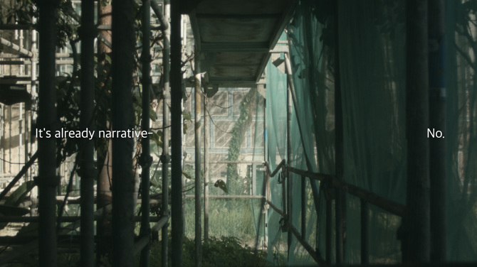
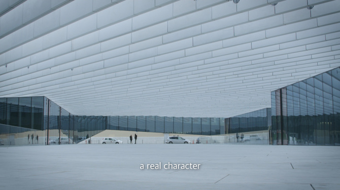
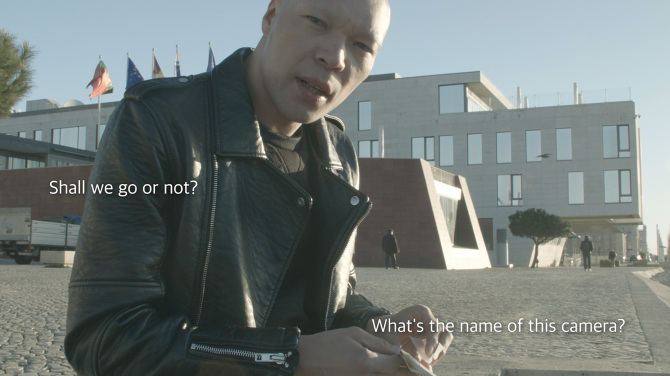
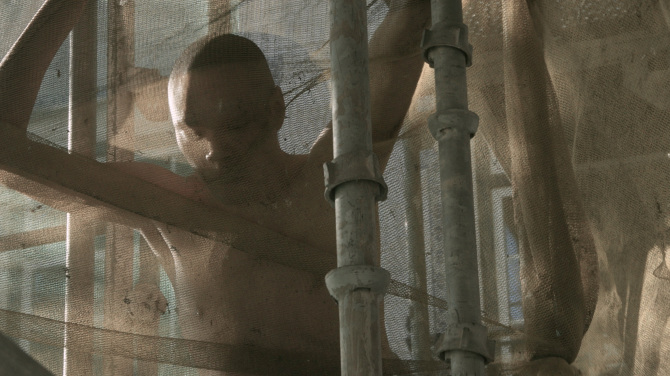
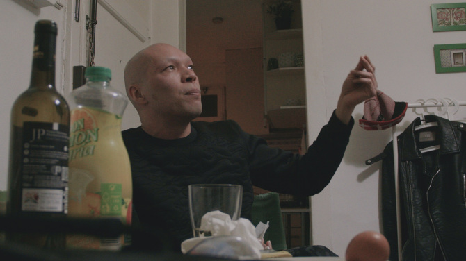
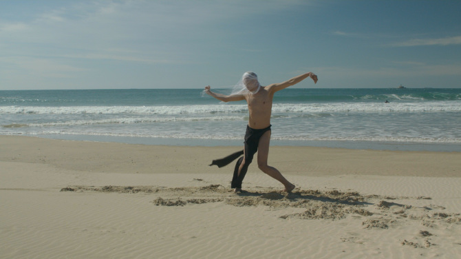
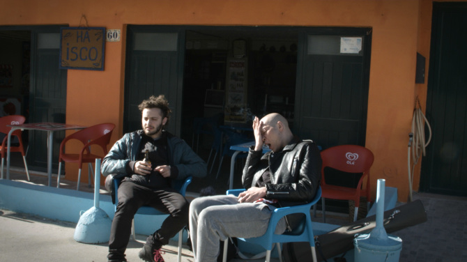

Detachment Mission
film
http://www.waltersolon.com/Detachment-Mission
(HD-Video, experimental, 23', 2016)
Shot, directed and edited by Walter Solon
Performance by Valentin Tszin
A collaboration with Russian
dancer Valentin Tszin, as a part of
Capturing
Dance, which connected students from the Academy of
Media Arts, Cologne, and the SODA performance program at HZT,
Berlin. Valentin had a workshop in Lisbon and we ended up
spending six days there together, sharing a small apartment,
looking for locations and shooting improvised dances. After
several cuts, I ended up with a version that contains some of
our backstage discussions and a kind of romantic diary based
on experiences that happened before, during and after the
shoot.
Screenings and exhibitions:
2016 Galerie Patrick
Ebensperger, Berlin, Germany
2016 Urban Street Walk,
Dusseldorf, Germany
2017 Videonale Parcours,
Bonn, Germany







Cologne/Lisbon
2016